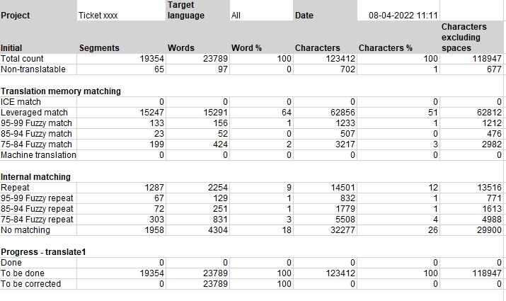
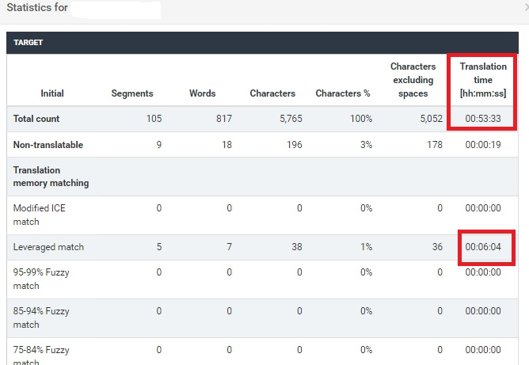

Analytics
According to The Economist, data is now the most valuable resource in the world, ahead of oil. That is why it should be regarded as the company's biggest asset. The translation process is no different. You should be able to present the management with all kinds of data at any time.
That's where a TMS proves handy. Since it is a content management system for translation, it provides a variety of data in form of metrics and statistics.
Metrics
Metrics in a TMS should present all data in a user-friendly way so that all project participants could make relevant decisions e.g. on due dates, costs or linguist allocations. Here is an example of a metrics report generated from XTM:

- present different data (e.g. number of words and characters)
- outline all possible TM matches (including internal and machine translation as well as non-translatables)
- enable downloading reports in different formats (e.g. xls, csv) or showing them in the interface on a dashboard
- show progress of how much work has been done and is yet to be done
These metrics can be used by a translation vendor to calculate the price for a project or to generate an automatic purchase order to be sent to a vendor for approval. They are also useful to gain an understanding on the workload: how much time is needed for translation to be accomplished and how many linguists should be involved in the job.
Statistics
The statistics provides information about the quantity of translation actually done by the linguists in each project. In XTM the statistics are divided into the statistics source and statistics target. The data is presented for each linguist, workflow step and file and when there are multiple files in a project as a total for each linguist per workflow step.
A PM can decide when project statistics should be processed (when workflow changes, or once the whole project is finished. It is also possible to download this data as a .csv or .xls file, or present it on a dashboard in XTM.

What is worth noting is the Translation time feature shown in Statistics. It reflects the actual amount of time spent by a linguist on the whole job and on particular matches. A PM can use it as an indication for TM quality, timeline for similar jobs in future and edit distance being a metric for machine translation evaluation used for calculating the price for post-editing.
Reports
As mentioned above, all data can be presented in a TMS on a dashboard, but it is also very handy to be able to download them in a form of an Excel file (as .xls or .csv format) that you can use for your further reporting purposes.
- Metrics history
- Combined metrics
- Project delivery dates
- Statistics summary
- LQA report
- Costs and metrics
For some of these reports you can also choose the data they are to show (e.g. an example
for the Costs and metrics report: 
You can also filter reports by additional attributes such as linguists, steps, dates, languages to be provided with more specific data for your needs.